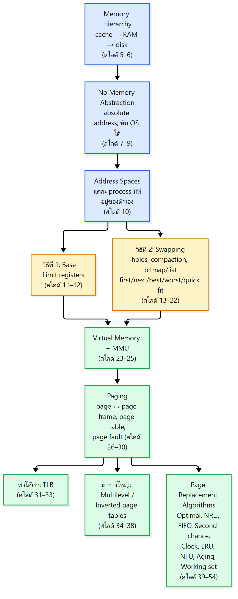
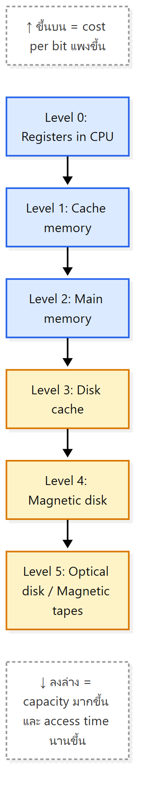
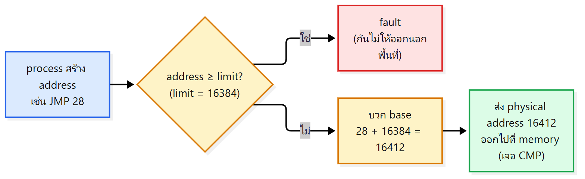
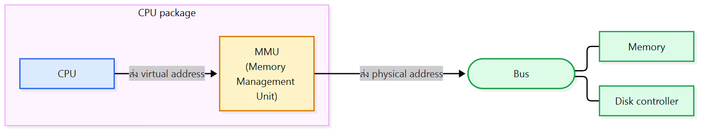
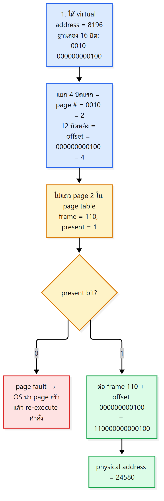
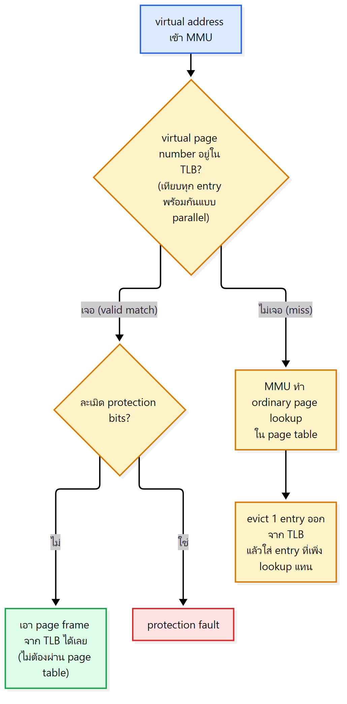
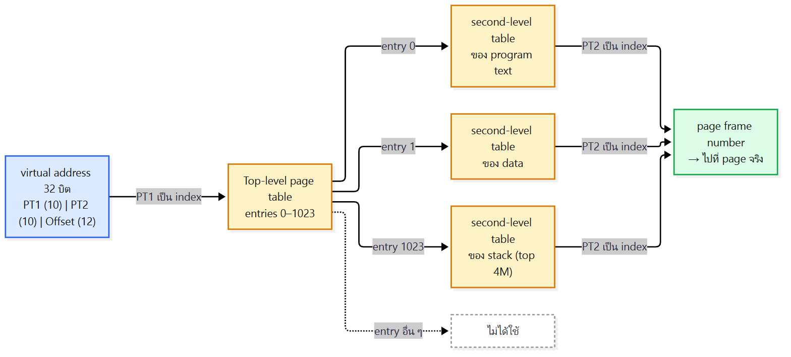
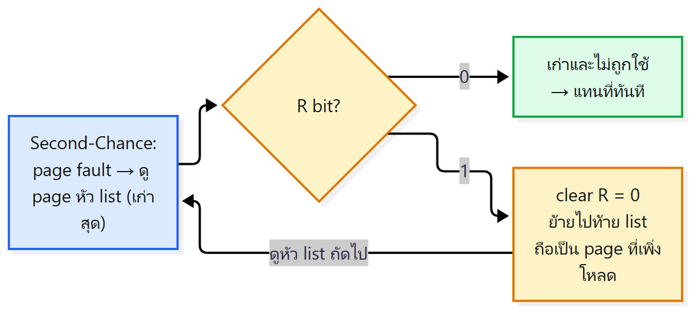
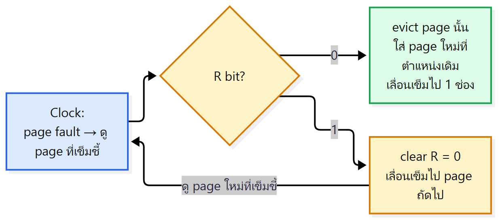
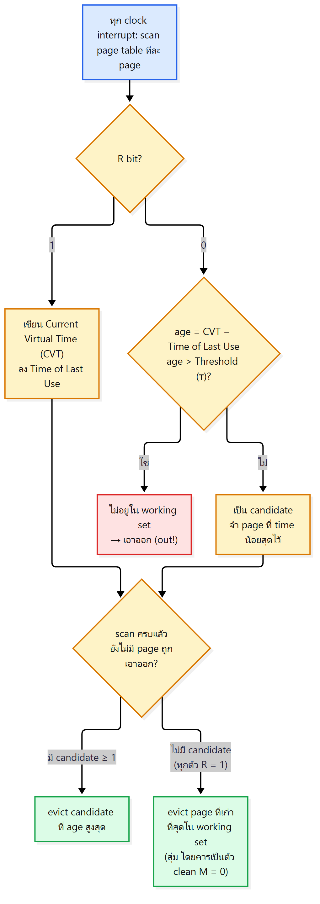

ภาพรวมบทนี้: (ITDS211, รศ.ดร.สุดสงวน งามสุริยโรจน์, 10 November 2026) บทนี้ตอบว่า OS จัดการหน่วยความจำ ยังไงให้หลาย process ใช้ RAM ร่วมกันได้อย่างปลอดภัยและคุ้มค่า
เริ่มจาก memory hierarchy → ยุคที่ ไม่มี abstraction (address เป็น absolute) → address space ด้วย base/limit registers และ swapping (bitmap, linked list, first/next/best/worst/quick fit) → virtual memory + MMU → paging (page table, page fault, TLB, multilevel / inverted page table) → page replacement algorithms 9 แบบ มีโจทย์คำนวณ: แปลง virtual → physical address (base+limit, paging 4 KB, ฐานสอง), multilevel page table (PT1/PT2/offset), ไล่ reference string แบบ Optimal / FIFO / LRU, Aging counter และ Working set (age vs threshold) — ทุกตัวเลขตรวจด้วย python แล้ว
เลขสไลด์ = เลขหน้า PDF (ตรงกับเลขที่พิมพ์บนสไลด์ทุกหน้า)

0. ตารางเรียนและหัวข้อวิชา OS
แก่นMemory Management คือคาบ OS#4 ของวิชา ต่อจาก Process Scheduling (OS#3) และก่อน File Systems (OS#5)
OS Outline (สไลด์ 3)
| Class | Tentative Topic |
|---|---|
| OS#1 | Introduction to OS |
| OS#2 | Process Concept |
| OS#3 | Process Scheduling |
| OS#4 | Memory Management ← บทนี้ |
| OS#5 | File Systems |
| OS#6 | Disk and I/O Management |
| OS#7 | Synchronization & Deadlock |
Class Schedule (สไลด์ 2) — อาจารย์ รศ.ดร.สุดสงวน ทุกคาบ
| Class | Section 1 | Section 2 |
|---|---|---|
| OS#1 | พฤหัส 3 ก.ย. 10–12 น. IT325 (Make up for Oct 6) | พฤหัส 3 ก.ย. 14–16 น. IT304 (Make up for Oct 8) |
| OS#2 | พฤหัส 10 ก.ย. 10–12 น. IT325 (Make up for Oct 13) | พฤหัส 10 ก.ย. 14–16 น. IT304 (Make up for Oct 15) |
| OS#3 | พฤหัส 24 ก.ย. 14–16 น. IT323 (Make up for Oct 22) | |
| OS#4 | อังคาร 10 พ.ย. 9–11 น. IT311 (เรียนปกติ) | พฤหัส 12 พ.ย. 9–11 น. IT324 (เรียนปกติ) |
| OS#5 | พฤหัส 12 พ.ย. 11–13 น. IT325 (Make up for Oct 20) | พฤหัส 12 พ.ย. 14–16 น. IT323 (Make up for Oct 29) |
| OS#6 | อังคาร 17 พ.ย. 9–11 น. IT311 (เรียนปกติ) | พฤหัส 26 พ.ย. 10–12 น. IT323 (เรียนปกติ) |
| OS#7 | อังคาร 24 พ.ย. 10–12 น. IT311 (Make up for Nov 3) | พฤหัส 26 พ.ย. 14–16 น. IT323 (Make up for Nov 5) |
1. Memory hierarchy คืออะไร และ memory manager ทำอะไร?
แก่นmemory เป็นชั้น ๆ — ยิ่งเร็วยิ่งแพงและเล็ก ยิ่งใหญ่ยิ่งช้าและถูก ส่วน memory manager คือส่วนของ OS ที่คอย track / allocate / deallocate memory ให้ process
1.1 Memory hierarchy มีกี่ชั้น?
แก่นcache (MB, เร็วมาก แพง volatile) → RAM (GB, ปานกลาง volatile) → disk/SSD (TB, ช้า ถูก non-volatile)
| ชั้น | ขนาด | ความเร็ว / ราคา | ข้อมูลหายเมื่อปิดเครื่อง? |
|---|---|---|---|
| Cache memory | a few MB | very fast, expensive | volatile (หาย) |
| Main memory (RAM) | a few GB | medium-speed, medium-priced | volatile (หาย) |
| Magnetic disk / SSD | a few TB | slow, cheap | non-volatile (ไม่หาย) |
รูปพีระมิดในสไลด์แบ่งละเอียดกว่าเป็น 6 level:

- ยิ่ง ขึ้นบน (ไป Registers) → cost per bit แพงขึ้น
- ยิ่ง ลงล่าง (ไป Optical disk / tapes) → capacity มากขึ้น และ access time นานขึ้น
💡 เปรียบเหมือนโต๊ะทำงาน (เล็ก หยิบเร็ว) → ชั้นหนังสือในห้อง → ห้องสมุด (ใหญ่ แต่ต้องเดินไปไกล)
1.2 Memory manager มีหน้าที่อะไร?
แก่นเป็นส่วนของ OS ที่ดูแล memory hierarchy (บางส่วน) — manage, keep track, allocate, deallocate
สิ่งที่คาดหวังจาก memory manager:
- Efficiently manage memory — ใช้ memory ให้คุ้ม
- Keep track ว่าส่วนไหนของ memory กำลังถูกใช้อยู่
- Allocate memory ให้ process เมื่อมันต้องการ
- Deallocate คืนเมื่อ process ใช้เสร็จ
รูปในสไลด์: memory manager บอกว่า "Process 1, you can use memory address 10 to 39." แล้ว process ตอบ "OK sir!" — คือการ allocate ช่วง address ให้ process
2. ถ้า "ไม่มี memory abstraction" จะเกิดอะไรขึ้น?
แก่นโปรแกรมเห็น physical memory ตรง ๆ (absolute address) → มี process ได้ทีละตัว, เขียนทับ OS ได้, รันหลายโปรแกรมพร้อมกันยาก
2.1 Abstraction คืออะไร?
แก่นabstraction = ชั้นที่คั่นกลางระหว่าง 2 ระบบ จัดการการสื่อสารให้ ทั้งสองฝั่งไม่ต้องรู้ว่าอีกฝั่งทำงานยังไง
- รูปในสไลด์: Programmer (เขียน
int x; x = 12;) ⇄ Memory Abstraction provided by OS (Windows / Ubuntu) ⇄ Memory (RAM) (เห็นเป็นบิต00100010110110010010) - programmer ไม่ต้องรู้ว่า x ไปอยู่บิตไหนใน RAM — OS จัดการให้
2.2 วางโปรแกรมใน memory แบบไม่มี abstraction ได้กี่แบบ?
แก่น3 แบบง่าย ๆ สำหรับ OS + user process 1 ตัว (แบบอื่นก็มีได้)
(ล่าง = address 0, บน = 0xFFF…)
| แบบ | ส่วนบน | ส่วนกลาง | ส่วนล่าง (address 0) |
|---|---|---|---|
| (a) | User program | — | Operating system in RAM |
| (b) | Operating system in ROM | — | User program |
| (c) | Device drivers in ROM | User program | Operating system in RAM |
2.3 ปัญหาของการไม่มี abstraction คืออะไร?
แก่นaddress เป็น absolute → โปรแกรมเข้าถึงได้ทุก byte จึงทำลาย OS ได้ และรันหลายโปรแกรมพร้อมกันยาก
- Only one process in memory — มีได้ทีละ process
- หลาย process ทำได้ แต่ต้อง switching and swapping (memory ⇄ disk)
- All memory addresses are absolute — address ในโปรแกรม = ตำแหน่งจริงใน RAM
- user program เข้าถึง ทุก byte ได้ → trash/erase OS ได้ทั้งตั้งใจและไม่ตั้งใจ
- ยาก ที่จะรันหลายโปรแกรมพร้อมกัน
รูปตัวอย่างในสไลด์ 9 (โปรแกรมละ 16 KB, address ขึ้นทีละ 4):
| โปรแกรม (a) | โปรแกรม (b) | (c) โหลดทั้งคู่ต่อกันใน memory | |
|---|---|---|---|
| address 0 | JMP 24 |
JMP 28 |
(a) อยู่ช่วง 0–16380: JMP 24 ที่ 0, MOV ที่ 24, ADD ที่ 28 |
| address 24 | MOV |
— | (b) ถูกวางต่อที่ 16384–32764: JMP 28 ที่ 16384, CMP ที่ 16412 |
| address 28 | ADD |
CMP |
- จากรูป (c):
JMP 28ของโปรแกรม (b) ยังเป็น address absolute 28 → ชี้ไปที่ADDของโปรแกรม (a) ไม่ใช่CMPของตัวเอง (ซึ่งตอนนี้อยู่ที่ 16412) - นี่คือเหตุผลที่ต้องมี address space (หัวข้อถัดไป) และ base register (หัวข้อ 4) จะแก้ปัญหานี้
3. Address space คืออะไร?
แก่นaddress space = ชุดของ memory address ที่ process หนึ่งใช้ได้ แต่ละ process มีของตัวเอง เข้าถึงนอกพื้นที่ตัวเองไม่ได้
- Address space = the set of memory addresses that a process can use
- แต่ละ process มี address space ของตัวเอง แยกจาก process อื่น และ เข้าถึง address นอก address space ตัวเองไม่ได้
- คำถามหลัก: จะให้แต่ละโปรแกรมมี address space ของตัวเองยังไง ให้ address 28 ในโปรแกรมหนึ่ง หมายถึง ตำแหน่ง physical คนละที่ กับ address 28 ในอีกโปรแกรม (รูป: process P0–P4 นั่งโต๊ะแยกกัน)
💡 เปรียบเหมือนบ้านเลขที่ "28" ที่มีได้ในหลายซอย — เลขเดียวกันแต่คนละบ้าน
คำตอบในสไลด์มี 2 วิธี: วิธีที่ 1 Base and Limit Registers และ วิธีที่ 2 Swapping
4. Base และ Limit registers ทำงานยังไง?
แก่นCPU บวก base เข้ากับทุก address ที่ process สร้าง และเช็กกับ limit เพื่อกันออกนอกพื้นที่ — ข้อเสียคือต้องบวก+เทียบทุกครั้งที่อ้าง memory
4.1 ขั้นตอนการทำงาน
แก่นphysical address = address ของ process + base, ถ้า address ≥ limit = fault
- ใช้ hardware register พิเศษ 2 ตัว:
- Base — เก็บ physical address ที่โปรแกรม เริ่มต้น ใน memory
- Limit — เก็บ ความยาว ของโปรแกรม
- ทุกครั้งที่ process อ้าง memory → CPU บวก base เข้ากับ address ที่ process สร้าง ก่อนส่งออกไป โดยอัตโนมัติ
- พร้อมกันนั้น CPU เช็กว่า address ≥ limit หรือไม่ เพื่อกัน fault
ตัวอย่างจากรูปสไลด์ 11 (base = 16384, limit = 16384, โปรแกรมที่ 2 ถูกวางที่ 16384):
- โปรแกรมสั่ง
JMP 28→ address ที่ process สร้าง = 28 - เช็ก limit: 28 ≥ 16384 ? → ไม่ → ผ่าน
- บวก base: 28 + 16384 = 16412
- ส่ง 16412 ออกไป → เจอ
CMPซึ่งเป็นคำสั่งที่โปรแกรมตั้งใจจะกระโดดไปจริง ✔ (แก้ปัญหาในหัวข้อ 2.3)

4.2 ข้อเสียของ base/limit คืออะไร?
แก่นต้องทำ "บวก 1 ครั้ง + เทียบ 1 ครั้ง" ทุก memory reference — การเทียบเร็ว แต่การบวกช้าเพราะ carry-propagation time
- Comparison → ทำได้เร็ว
- Addition → ช้า เพราะต้องรอ carry-propagation (ตัวทดส่งต่อทีละบิต)
5. Swapping คืออะไร และสร้างปัญหาอะไร?
แก่นswapping = เอา process ทั้งตัวเข้า memory รันสักพัก แล้วเอากลับไปเก็บบน disk — ทำให้เกิด hole หลายช่อง และต้องเผื่อที่ให้ segment ที่โตได้
5.1 Swapping ทำงานยังไง?
แก่นprocess ที่ idle อยู่บน disk จึงไม่กิน memory ตอนไม่ได้รัน
- นำ process เข้ามา ทั้งตัว (in its entirety) → รันสักพัก → เอากลับไปไว้บน disk
- process ที่ idle ส่วนใหญ่อยู่บน disk → ไม่กิน memory ตอนไม่ได้รัน
รูปในสไลด์ 13 — memory allocation เปลี่ยนไปตามเวลา (a)→(g) เมื่อ process เข้า/ออก (ล่างสุดคือ OS เสมอ, ส่วนแรเงา = memory ว่าง):
| เวลา | ใน memory (จากล่างขึ้นบน ไม่นับ OS) | เกิดอะไรขึ้น |
|---|---|---|
| (a) | A | A เข้ามา |
| (b) | A, B | B เข้ามา |
| (c) | A, B, C | C เข้ามา |
| (d) | (ว่าง), B, C | A ถูก swap ออก → เกิดช่องว่าง |
| (e) | D, (ว่าง), B, C | D เข้ามาใช้ส่วนล่างของที่ว่าง เหลือ hole เล็ก ๆ |
| (f) | D, (ว่าง), C | B ถูก swap ออก |
| (g) | D, A, C | A กลับเข้ามา — คนละตำแหน่งกับครั้งแรก |
5.2 Hole และ memory compaction คืออะไร?
แก่นswapping ทำให้เกิด hole หลายช่อง แก้ได้ด้วย compaction (ย้ายทุก process ลงล่างรวม hole เป็นก้อนเดียว) แต่ไม่ค่อยทำเพราะเปลือง CPU time
- Hole = ช่องว่างใน memory ที่เกิดจาก process ออกไป
- Memory compaction = รวม hole ทั้งหมดเป็น hole ใหญ่ก้อนเดียว โดย ย้าย process ทั้งหมดลงล่างให้มากที่สุด
- แต่ ไม่ค่อยทำ เพราะ ใช้ CPU time มาก
- ถ้าขนาด process fixed & static → OS จัดสรรให้พอดีได้เลย
- แต่จริง ๆ data segment (และ stack) โตได้ (dynamically grow) → process อาจต้องการที่เพิ่ม หรือต้อง swap process อื่นออกไป disk
💡 compaction เปรียบเหมือนเลื่อนรถทุกคันในลานจอดให้ชิดกันเพื่อให้เหลือที่ว่างก้อนใหญ่ — ได้ที่ว่าง แต่ต้องเสียเวลาขยับทุกคัน
5.3 Segment ที่โตได้มีอะไรบ้าง และเผื่อที่ยังไง?
แก่นprocess มี 2 segment ที่โตได้ — data segment (ตัวแปรที่ allocate แบบ dynamic) และ stack segment (local variable + return address) จึงต้องเผื่อ "room for growth"
| Segment | เก็บอะไร |
|---|---|
| Data segment | ตัวแปรที่ dynamically allocated |
| Stack segment | local variables และ return addresses |
รูปในสไลด์:
- (a) เผื่อที่ให้ data segment ที่โต — แต่ละ process (A, B) มีส่วน "Actually in use" และเหนือขึ้นไปมี "Room for growth" (ลูกศรชี้ขึ้น)
- (b) เผื่อที่ให้ทั้ง stack และ data ที่โต — แต่ละ process เรียงจากล่าง: Program → Data (โตขึ้นบน) → Room for growth → Stack (โตลงล่าง) คือ data กับ stack โตเข้าหากัน ในช่องว่างตรงกลาง
6. OS จำว่า memory ส่วนไหนว่างได้ยังไง?
แก่นมี 2 วิธี — Bitmap (1 บิตต่อ allocation unit) และ Linked list ของ process/hole — bitmap หาช่องว่างต่อเนื่องได้ช้า ส่วน list ต้องอัปเดตและรวม hole เมื่อ process จบ
6.1 Bitmap กับ Linked list เก็บข้อมูลยังไง?
แก่นแบ่ง memory เป็น allocation units — bitmap ใช้ 1 บิตต่อ unit (1 = ใช้อยู่, 0 = ว่าง), list เก็บเป็นโหนด (P/H, จุดเริ่ม, ความยาว)
ตัวอย่างในสไลด์: memory 32 units มี 5 process (A–E) และ 3 hole
| units | 0–4 | 5–7 | 8–13 | 14–17 | 18–19 | 20–25 | 26–28 | 29–31 |
|---|---|---|---|---|---|---|---|---|
| เจ้าของ | A | hole | B | C | hole | D | E | hole |
Bitmap (แถวละ 8 units):
| units | bitmap |
|---|---|
| 0–7 | 11111000 |
| 8–15 | 11111111 |
| 16–23 | 11001111 |
| 24–31 | 11111000 |
Linked list — แต่ละโหนด = (P = process / H = hole, starts at, length):
P 0 5 → H 5 3 → P 8 6 → P 14 4 → H 18 2 → P 20 6 → P 26 3 → H 29 3 → X (จบ)
- เช่นโหนด
H 18 2= Hole ที่ starts at 18 ยาว 2
✔ ตรวจด้วย python แล้ว: bitmap 4 แถวและ list 8 โหนดตรงกับตำแหน่ง A–E ในรูปทุกตัว
⚠️ คำบรรยายใต้รูปสไลด์ 16 ใส่ป้ายสลับกัน — เขียนว่า "(b) The shaded region are free. (c) The corresponding bitmap. (c) The same information as a list." แต่ในรูปจริง (a) = memory, (b) = bitmap, (c) = list
6.2 แต่ละวิธีมีปัญหาอะไร?
แก่นbitmap — ต้องค้นหา 0 ติดกัน k ตัว ซึ่งช้า | list — เมื่อ process จบต้องอัปเดต list และรวมกับเพื่อนบ้านที่เป็น hole
ปัญหาของ Bitmap:
- ถ้าจะใส่ process ขนาด k units → ต้องค้น bitmap หา 0 ติดกัน (consecutive) k ตัว → slow operation
ปัญหาของ Linked list:
- ต้องดูแล list ของ segment ที่ใช้อยู่และที่ว่าง (แต่ละโหนดเป็น process หรือ hole)
- เมื่อ process หนึ่ง จบ → list ต้อง อัปเดต และต้องตัดสินใจว่าที่ว่างนั้นจะให้ process ใหม่ตัวไหน
4 กรณีเพื่อนบ้านของ process X ที่กำลังจบ (รูปในสไลด์):
| กรณี | ก่อน X จบ | หลัง X จบ |
|---|---|---|
| (a) | A · X · B | A · hole · B |
| (b) | A · X · hole | A · hole ใหญ่ (X รวมกับ hole ขวา) |
| (c) | hole · X · B | hole ใหญ่ (hole ซ้ายรวมกับ X) · B |
| (d) | hole · X · hole | hole ใหญ่ก้อนเดียว (3 ช่องรวมกัน) |
7. จะเลือก hole ไหนให้ process ใหม่?
แก่นมี 5 อัลกอริทึม — First fit (เจอแรกที่พอ), Next fit (เหมือน first แต่ค้นต่อจากที่เดิม), Best fit (เล็กสุดที่พอ), Worst fit (ใหญ่สุด), Quick fit (แยก list ตามขนาดที่ขอบ่อย)
| อัลกอริทึม | วิธีเลือก hole | ข้อดี / ข้อเสียตามสไลด์ |
|---|---|---|
| First fit | ไล่ list จากต้น จนเจอ hole แรกที่ ใหญ่พอ แล้วแบ่ง hole เป็น 2 ส่วน: ส่วนของ process + ส่วนที่เหลือว่าง | — |
| Next fit | เหมือน first fit แต่ จำตำแหน่งที่เจอ hole ล่าสุด ครั้งต่อไป เริ่มค้นจากตรงที่ค้างไว้ | — |
| Best fit | ค้น ทั้ง list เลือก hole เล็กสุดที่ยังพอ | ไม่ทำลาย hole ใหญ่ที่อาจต้องใช้ภายหลัง แต่ ช้ากว่า first fit เพราะต้องค้นทั้ง list ทุกครั้ง |
| Worst fit | ตรงข้าม best fit — เลือก hole ใหญ่สุด | hole ที่เหลือจะ ใหญ่พอใช้งานต่อได้ |
| Quick fit | มี list แยกตามขนาดที่ขอบ่อย เช่น ตาราง n entries: entry 1 ชี้หัว list ของ hole 4 KB, entry 2 ชี้ list ของ hole 8 KB, … | หา hole ขนาดที่ต้องการได้ เร็วมาก แต่ตอน process จบ/ถูก swap out การ หาเพื่อนบ้านเพื่อ merge แพง (ช้า) |
💡 เปรียบเหมือนหาที่นั่งในโรงอาหาร: first fit = นั่งโต๊ะแรกที่ว่างพอ | best fit = เดินดูทุกโต๊ะ เลือกโต๊ะที่พอดีที่สุด | worst fit = เลือกโต๊ะใหญ่สุด | quick fit = มีป้ายแยกโซนโต๊ะ 2 คน / 4 คนไว้แล้ว
7.1 ทำให้ 4 อัลกอริทึมแรกเร็วขึ้นได้ยังไง?
แก่นแยก list ของ process กับ list ของ hole และเรียง hole list ตามขนาด → first fit กับ best fit เร็วเท่ากัน และ next fit ไม่มีประโยชน์
- แยก list ของ process กับ list ของ hole ออกจากกัน → first / next / best / worst fit เร็วขึ้น
- เรียง hole list ตามขนาด → best fit เร็วขึ้น
- เมื่อ hole list เรียงตามขนาดแล้ว → first fit กับ best fit เร็วเท่ากัน และ next fit ไม่มีประโยชน์ (pointless)
- ยัง optimize ได้อีกนิด โดย เก็บข้อมูลไว้ใน hole เอง แทนการมีโครงสร้างข้อมูลแยก
⚠️ สไลด์ถามว่า "Why is next fit pointless?" แต่ไม่ได้เฉลย — แนวคิดจากข้อความในสไลด์เอง: เมื่อ list เรียงจากเล็กไปใหญ่ hole แรกที่ "พอ" (first fit) ก็คือ hole ที่เล็กสุดที่พอ (= best fit) อยู่แล้ว การ "ค้นต่อจากที่ค้างไว้" ของ next fit จึงไม่ได้ช่วยอะไร — ถ้าเจอข้อนี้ในข้อสอบควรถามอาจารย์ยืนยันเหตุผลที่ต้องการ
8. Virtual memory คืออะไร และ MMU ทำหน้าที่อะไร?
แก่นbase/limit + swapping ไม่พอ (ปัญหา bloatware) → virtual memory แบ่ง address space เป็น page ซึ่งไม่ต้องอยู่ใน RAM พร้อมกันทั้งหมด โดย MMU แปลง virtual address เป็น physical address
8.1 ทำไมต้องมี virtual memory?
แก่นbase/limit มีปัญหา bloatware — จึงใช้ virtual memory เพื่อให้มี process ใน memory ได้มากขึ้นเสมอ
- ปัญหาใหญ่ของ base/limit registers คือ bloatware
- Bloatware = ซอฟต์แวร์ที่ไม่จำเป็นซึ่ง preloaded มา ทำให้ระบบช้า
- แนวคิด base/limit + swapping จึง ไม่ใช่ทางเลือกที่ดี
- ทางเลือกใหม่: Virtual memory → เรามี process ใน memory ได้มากขึ้นเสมอ
8.2 Virtual memory ทำงานยังไง?
แก่นaddress space ถูกหั่นเป็น page (ช่วง address ต่อเนื่อง) — page อยู่ใน RAM หรือ disk ก็ได้ ถ้าอ้างถึง page ที่ไม่อยู่ใน RAM OS จะไปดึงมาแล้ว re-execute คำสั่ง
- แต่ละโปรแกรมมี address space ของตัวเอง ถูกแบ่งเป็นก้อน ๆ เรียกว่า pages
- แต่ละ page = contiguous range of addresses (ช่วง address ต่อเนื่อง)
- page แต่ละอันอยู่ได้ทั้งใน secondary memory หรือใน page frame ของ main memory
- แต่ไม่จำเป็นต้องมีทุก page อยู่ใน physical memory พร้อมกัน
- เมื่อโปรแกรมอ้างถึงส่วนที่:
- อยู่ใน physical memory → execute คำสั่งตามปกติ
- ไม่อยู่ใน physical memory → OS ถูกแจ้งให้ไปดึงส่วนที่ขาดมา แล้ว re-execute คำสั่งนั้น
- frame ไม่จำเป็น ต้องเป็นพื้นที่ต่อเนื่องก้อนเดียวใน secondary storage
8.3 Virtual address และ MMU คืออะไร?
แก่นvirtual address = address ที่โปรแกรมสร้าง ซึ่งไม่ไปที่ memory bus ตรง ๆ แต่ผ่าน MMU ก่อน — MMU map เป็น physical address
- Virtual address = address ที่ โปรแกรมสร้างขึ้น (ระดับ high-level) — รวมกันเป็น virtual address space
- virtual address ไม่ได้ไปที่ memory bus โดยตรง แต่ไปที่ MMU (Memory Management Unit)
- MMU maps virtual address → physical memory address

ตามรูปสไลด์: MMU อยู่ ใน CPU package ร่วมกับ CPU — CPU ส่ง virtual address ให้ MMU → MMU ส่ง physical address ออกไปบน bus ที่ต่อกับ Memory และ Disk controller
9. Paging: page กับ page frame แปลง address ยังไง?
แก่นpage (ฝั่ง virtual) กับ page frame (ฝั่ง physical) มีขนาดเท่ากัน — แปลง address = หาเลข page → ดูว่า map ไป frame ไหน → physical = frame × ขนาด page + offset; ถ้า page ไม่ถูก map = page fault
9.1 Page กับ page frame ต่างกันยังไง?
แก่นpage = หน่วยขนาดคงที่ใน virtual address space, page frame = หน่วยที่คู่กันใน physical memory, ขนาดเท่ากันแต่จำนวนไม่เท่ากัน
- Page — หน่วยขนาดคงที่ (fixed-size) ใน virtual address space
- Page frame — หน่วยที่คู่กันใน physical memory
- page กับ page frame มัก ขนาดเท่ากัน
- แต่ จำนวน page ใน virtual address space กับ page frame ใน physical memory ไม่เท่ากัน
ตารางการ map ในรูปสไลด์ 26 — virtual 64 KB (16 pages), physical 32 KB (8 frames), page ละ 4 KB = 4096 bytes (X = ไม่ได้ map)
| Virtual page | ช่วง virtual | → Page frame | ช่วง physical |
|---|---|---|---|
| 0 | 0K–4K | 2 | 8K–12K |
| 1 | 4K–8K | 1 | 4K–8K |
| 2 | 8K–12K | 6 | 24K–28K |
| 3 | 12K–16K | 0 | 0K–4K |
| 4 | 16K–20K | 4 | 16K–20K |
| 5 | 20K–24K | 3 | 12K–16K |
| 6 | 24K–28K | X | — |
| 7 | 28K–32K | X | — |
| 8 | 32K–36K | X | — |
| 9 | 36K–40K | 5 | 20K–24K |
| 10 | 40K–44K | X | — |
| 11 | 44K–48K | 7 | 28K–32K |
| 12–15 | 48K–64K | X | — |
9.2 ตัวอย่างแปลง address (สไลด์ 26–27)
สูตรที่ใช้ (page size 4096): page # = virtual ÷ 4096 (ปัดเศษทิ้ง), offset = virtual mod 4096, physical = frame × 4096 + offset
ตัวอย่าง 1: virtual address 8192
- page # = 8192 ÷ 4096 = 2, offset = 0
- page 2 → frame 6
- physical = 6 × 4096 + 0 = 24576 ✔ ตรงกับสไลด์
⚠️ สไลด์ 26 เขียนเรียงกันว่า "Page 0 is mapped to page frame 2" แล้วตามด้วย "Virtual address 8192 is mapped to physical address 24576" — แต่ 8192 อยู่ใน page 2 (8K–12K) ซึ่ง map ไป frame 6 ไม่ใช่ตัวอย่างของ page 0 (ถ้าเป็น page 0: virtual 0 → frame 2 → physical 2 × 4096 = 8192) ตัวเลขทั้งสองข้อถูก แค่เป็นคนละตัวอย่าง
ตัวอย่าง 2: virtual address 20500
- page # = 20500 ÷ 4096 = 5 (เพราะ 5 × 4096 = 20480)
- offset = 20500 − 20480 = 20
- page 5 → frame 3
- physical = 3 × 4096 + 20 = 12288 + 20 = 12308
ตัวอย่าง 3: virtual address 32780 → page fault
- page # = 32780 ÷ 4096 = 8 (8 × 4096 = 32768), offset = 12
- page 8 → X (unmapped) → MMU สังเกตว่า page 8 ไม่ได้ map
- MMU ทำให้ CPU trap ไปหา OS — trap นี้เรียกว่า page fault
- OS เลือก page frame ที่ไม่ค่อยถูกใช้ (little-used) แล้ว เขียนเนื้อหากลับลง disk
- OS ดึง page ที่ถูกอ้างถึงมาใส่ frame ที่ว่างนั้น → แก้ map → restart คำสั่ง
✔ ตรวจด้วย python: 8192 → 24576, 20500 → 12308, 32780 → page 8 = page fault
10. Page table หน้าตาเป็นยังไง และแปลง address ทีละขั้นยังไง?
แก่นของจริงใช้ page table (ไม่ใช่ pointer หลายตัว) — ใช้เลข page เป็น index ดู frame number และ present/absent bit แล้วเอา frame ต่อกับ offset เป็น physical address
10.1 ตัวอย่างแปลง 8196 ด้วยเลขฐานสอง
แก่นvirtual 16 บิต = page # 4 บิต + offset 12 บิต → offset ถูกคัดลอกตรงไปยัง output, page # ถูกแทนด้วย frame # 3 บิต
- page table บอกด้วยว่า page อยู่ใน memory ไหม ผ่าน present/absent bit
Page table ในรูปสไลด์ 28 (ตรงกับการ map ของสไลด์ 26):
| page | frame (ฐานสอง) | present | page | frame | present | |
|---|---|---|---|---|---|---|
| 0 | 010 | 1 | 8 | 000 | 0 | |
| 1 | 001 | 1 | 9 | 101 | 1 | |
| 2 | 110 | 1 | 10 | 000 | 0 | |
| 3 | 000 | 1 | 11 | 111 | 1 | |
| 4 | 100 | 1 | 12 | 000 | 0 | |
| 5 | 011 | 1 | 13 | 000 | 0 | |
| 6 | 000 | 0 | 14 | 000 | 0 | |
| 7 | 000 | 0 | 15 | 000 | 0 |
ทีละขั้น: virtual 8196 → physical 24580

| ขั้น | ค่า |
|---|---|
| virtual 8196 เป็นฐานสอง 16 บิต | 0010 000000000100 |
| page # (4 บิตแรก) | 0010 = 2 |
| offset (12 บิตหลัง) | 000000000100 = 4 — copied directly from input to output |
| page table แถว 2 | frame 110 (= 6), present = 1 |
| ต่อ frame + offset (15 บิต) | 110 000000000100 |
| physical address | 6 × 4096 + 4 = 24580 ✔ |
10.2 Page table entry มีกี่ field?
แก่น6 field — page frame number, present/absent, protection, modified (dirty), referenced, caching disabled
| Field | ความหมายของค่า |
|---|---|
| Page frame number | เลข frame ใน physical memory |
| Present/absent | 1 = present (อยู่ใน memory), 0 = absent (ไม่อยู่) |
| Protection | 1 = read only, 0 = read and write |
| Modified (dirty bit) | 1 = ถูกแก้ ต้องเขียนลง disk, 0 = ไม่ถูกแก้ |
| Referenced | 1 = กำลังถูกอ้างถึง, 0 = ไม่มีใครใช้ |
| Caching disabled | 1 = disabled, 0 = not disabled |
ลำดับใน entry ตามรูป (ซ้ายไปขวา): (ส่วนแรเงา) · Caching disabled · Referenced · Modified · Protection · Present/absent · Page frame number (ช่องใหญ่สุดทางขวา)
⚠️ ระวังสับสน: Protection = 1 คือ read only (ไม่ใช่ "อนุญาต")
10.3 ขั้นตอน paging สรุป
แก่นได้ virtual address → อ่าน 4 บิตแรกเป็น page # → ไปแถวนั้นใน page table → ถ้า present = 0 ต้อง re-execute, ถ้า 1 เอา frame ต่อกับ offset
- Get a virtual address
- Convert to a physical address
- อ่าน 4 บิตแรก = page #
- ค้น page table ไปที่แถวของ page # นั้น
- เช็ก present bit ถ้า 0 → re-execute the instruction
- ถ้า 1 → ดึง page frame number มา ต่อกับ offset = physical address
⚠️ ข้อความสไลด์ 30 มีจุดที่อาจทำให้งง: (1) ขั้น 2 เขียนว่า "Convert to a physical address" ก่อนที่จะยังไม่ได้ดูตาราง — ตามรูปสไลด์ 28 ขั้นนี้คือการเขียน virtual address เป็นเลขฐานสอง (2) ขั้น 5 present = 0 ตามสไลด์ 24, 27 คือ page fault → OS ดึง page มาก่อน แล้วจึง re-execute (3) "4 บิตแรก" ใช้กับตัวอย่าง 16 บิต / page 4 KB นี้ — ถ้าโจทย์ขนาดต่างไป จำนวนบิตก็ต่างไป ถ้าตอบข้อสอบให้ยึดตามสไลด์
11. TLB ช่วยให้แปลง address เร็วขึ้นยังไง?
แก่นpaging มี 2 ปัญหา (ต้องเร็ว + ตารางใหญ่) — TLB คือ hardware เล็ก ๆ ใน MMU ที่ map virtual → physical ได้โดยไม่ต้องผ่าน page table
11.1 ปัญหาหลักของ paging และทางแก้
แก่นตารางใน register เร็วแต่แพงมาก, ตารางใน memory ถูกแต่ช้า (อ่าน memory 2 ครั้ง), TLB คือทางสายกลาง
2 ปัญหาใหญ่:
- การ map virtual → physical ต้องเร็ว
- ถ้า virtual address space ใหญ่ → page table ก็ ใหญ่
ทางแก้:
| ทางแก้ | ข้อดี / ข้อเสีย |
|---|---|
| page table เดียวใน fast H/W registers (1 entry ต่อ virtual page) | เร็ว แต่แพงมาก |
| เก็บ page table ทั้งหมดใน memory | ช้า เพราะต้อง อ่าน memory 2 ครั้ง |
| Translation Lookaside Buffers (TLB) | ดูหัวข้อถัดไป |
11.2 TLB คืออะไร เก็บอะไร?
แก่นhardware ขนาดเล็ก (associative memory) มักอยู่ใน MMU แต่ละ entry เก็บข้อมูล 1 page
- small H/W device ที่ map virtual → physical โดยไม่ต้องผ่าน page table
- บางทีเรียกว่า associative memory
- มักอยู่ ใน MMU
- แต่ละ entry มี: virtual page number, modified bit, protection code, physical page frame, valid/invalid bit
ตัวอย่าง TLB ในสไลด์:
| Valid | Virtual page | Modified | Protection | Page frame |
|---|---|---|---|---|
| 1 | 140 | 1 | RW | 31 |
| 1 | 20 | 0 | R X | 38 |
| 1 | 130 | 1 | RW | 29 |
| 1 | 129 | 1 | RW | 62 |
| 1 | 19 | 0 | R X | 50 |
| 1 | 21 | 0 | R X | 45 |
| 1 | 860 | 1 | RW | 14 |
| 1 | 861 | 1 | RW | 75 |
11.3 TLB ทำงานยังไง?
แก่นเทียบ virtual page กับทุก entry พร้อมกัน — เจอและไม่ผิด protection = ได้ frame ทันที, เจอแต่ผิด protection = protection fault, ไม่เจอ = lookup page table ปกติแล้วเอา entry นั้นมาแทน entry เก่าใน TLB

💡 TLB เปรียบเหมือนโพสต์อิทแปะหน้าจอที่จดเบอร์โทรที่ใช้บ่อย — ไม่ต้องเปิดสมุดโทรศัพท์ (page table) ทุกครั้ง ถ้าไม่มีในโพสต์อิทค่อยเปิดสมุด แล้วจดเบอร์นั้นทับโพสต์อิทเก่าแผ่นหนึ่ง
12. ถ้า address space ใหญ่มาก จะเก็บ page table ยังไง?
แก่น2 วิธี — Multilevel page tables (แบ่ง page table เป็นชั้น สร้างเฉพาะส่วนที่ใช้) และ Inverted page tables (1 entry ต่อ page frame จริง แต่แปลง address ยากเพราะต้องค้นทั้งตาราง)
12.1 Multilevel page table แบ่ง address ยังไง?
แก่นvirtual address 32 บิต = PT1 (10 บิต) + PT2 (10 บิต) + Offset (12 บิต)
| Bits | 10 | 10 | 12 |
|---|---|---|---|
| Field | PT1 | PT2 | Offset |
โจทย์ตั้งต้นในสไลด์:
- process ต้องการ พอดี 12 MB:
- ล่างสุด 4 MB = program text
- ถัดมา 4 MB = data
- บนสุด 4 MB = stack
- memory ขนาด 4 GB
- แต่ละ page table มี K = 2^10 = 1024 entries พอดี (สไลด์เขียนว่า "K pages") ไม่ว่า page จะขนาดเท่าไหร่
12.2 ใช้ PT1 / PT2 หา page ยังไง?
แก่นPT1 เป็น index ใน top-level table → ได้ตำแหน่ง second-level table → PT2 เป็น index ใน second-level table → ได้ page frame number
- MMU ดึง PT1 มาใช้เป็น index ใน top-level page table
- entry ที่ได้ให้ address / page frame number ของ second-level page table
- Entry 0 → page table ของ program text
- Entry 1 → page table ของ data
- Entry 1023 → page table ของ stack
- entry อื่น ๆ ไม่ได้ใช้
- ใช้ PT2 เป็น index ใน second-level table ที่เลือก → ได้ page frame number

12.3 คำนวณ address จาก PT1/PT2/offset ยังไง?
แก่นPhysical address = PT1 × 4M + PT2 × 4K + offset (K = 2^10, M = 2^20)
สูตรในสไลด์:
Physical address = (PT1)(size of top-level page) + (PT2)(size of second-level page) + offset
ทำไม top-level = 4M และ second-level = 4K? (สไลด์ถามไว้ — คำนวณจากการแบ่งบิตในสไลด์ 35)
- offset มี 12 บิต → 1 page = 2^12 = 4096 = 4K → แต่ละ entry ของ second-level ครอบคลุม 4K
- second-level table มี 2^10 entries × 4K = 2^10 × 2^12 = 2^22 = 4M → แต่ละ entry ของ top-level ครอบคลุม 4M
- (สอดคล้องกับโจทย์: แต่ละส่วน 4 MB ÷ 4 KB = 1024 pages = second-level table 1 ตารางพอดี)
ตัวอย่าง: virtual address = 0x00403004
| ขั้น | ค่า |
|---|---|
| 0x00403004 เป็นฐานสอง | 0000 0000 0100 0000 0011 0000 0000 0100 |
| PT1 = 10 บิตแรก | 0000000001 = 1 |
| PT2 = 10 บิตถัดมา | 0000000011 = 3 |
| offset = 12 บิตท้าย | 000000000100 = 4 |
| แทนสูตร | (1)(4M) + (3)(4K) + 4 |
| = 4194304 + 12288 + 4 | |
| = 4206596 ✔ |
- PT1 = 1 → entry 1 ของ top-level = page table ของ data
✔ ตรวจด้วย python แล้วได้ PT1 = 1, PT2 = 3, offset = 4, ผลรวม 4206596 ตรงกับสไลด์
⚠️ สังเกต: 4206596 คือค่าฐานสิบของ 0x00403004 เอง (สูตรนี้คือการถอดเลข virtual address กลับเป็นฐานสิบ) ส่วนเลข frame จริงขึ้นกับค่าใน second-level table ซึ่งสไลด์ไม่ได้ให้มา — ทำข้อสอบให้ใช้สูตรและเรียกผลว่า physical address ตามสไลด์
12.4 Inverted page table คืออะไร?
แก่นมี 1 entry ต่อ page frame ใน memory จริง (ตารางเล็กลงมาก) แต่แปลง address ยากเพราะ hardware ต้องค้นทั้งตาราง
- 1 entry ต่อ page frame ใน real memory (ไม่ใช่ต่อ virtual page)
- ข้อเสียร้ายแรง: แปลง virtual → physical ยากขึ้นมาก เพราะ H/W ต้อง ค้นทั้ง inverted page table
เทียบตามรูปในสไลด์:
| Traditional page table | Inverted page table (แบบ hash table) | |
|---|---|---|
| จำนวน entry | 1 entry ต่อ virtual page → 2^52 entries | 1 entry ต่อ page frame → ตัวอย่าง 1-GB physical memory มี 2^18 frames ขนาด 4-KB |
| index ด้วย | virtual page | hash ของ virtual page |
| ใน entry | page frame | โซ่ของคู่ (virtual page, page frame) |
✔ 1 GB ÷ 4 KB = 2^30 ÷ 2^12 = 2^18 frames (ตรวจด้วย python)
13. Page replacement: ทำไมต้องมี และมีอัลกอริทึมอะไรบ้าง?
แก่นเมื่อเกิด page fault และ memory เต็ม OS ต้องเลือก page ไป evict — เป้าหมายคือ page fault rate ต่ำที่สุด ควรเลือก page ที่ไม่ค่อยถูกใช้
- เป้าหมายหลัก: lowest page fault rate
- เมื่อเกิด page fault OS ต้อง เลือก page ไป evict (เอาออกจาก memory) เพื่อให้ page ใหม่เข้ามา
- จะสุ่มก็ได้ แต่ระบบจะดีกว่ามากถ้าเลือก page ที่ไม่ได้ถูกใช้หนัก
- ถ้า page ที่ evict ถูกแก้ไขแล้ว → ต้อง อัปเดต disk
- อีก 2 ประเด็น:
- Local — evict page ของ process เดียวกัน
- Global — evict page ของ process อื่น
รายการอัลกอริทึมในสไลด์ 40: Optimal, Not Recently Used (NRU), FIFO, Second-Chance, Clock, Least Recently Used (LRU), Working Set, WSClock
⚠️ รายการในสไลด์ 40 ไม่มี NFU และ Aging แต่มีสไลด์อธิบาย (48–49) และอยู่ในตารางสรุป (54) — ส่วน WSClock อยู่ในรายการและตารางสรุป แต่ ไม่มีสไลด์อธิบายวิธีทำงาน
Reference string ที่สไลด์ใช้ (3 frames): 7 0 1 2 0 3 0 4 2 3 0 3 2 1 2 0 1 7 0 1 (20 ครั้ง)
- รูปในสไลด์ 41, 43, 44 แสดงแค่ 11 ครั้งแรก (ถึง
… 4 2 3 0) แล้วเหลือช่องว่าง 1 ช่อง - ตารางด้านล่างแสดงส่วนที่สไลด์แสดง และ คำนวณต่อจนครบ 20 ครั้งด้วยกฎเดียวกัน (ตรวจด้วย python) — ส่วนที่คำนวณต่อจะมีขีดคั่น
14. Optimal
แก่นevict page ที่จะถูกใช้อีก "ช้าที่สุด" (label สูงสุด) — ดีที่สุดแต่ทำจริงไม่ได้ เพราะ OS ไม่รู้อนาคต
- ติด label ให้ทุก page = จำนวนคำสั่งที่จะ execute ก่อน page นั้นถูกอ้างถึงครั้งแรก
- evict page ที่ label สูงสุด (จะถูกใช้อีกนานที่สุด)
- ไม่ realistic — OS ไม่มีทางรู้ว่า page ไหนจะถูกอ้างถึงต่อไป
วิธีคิดแต่ละครั้งที่ต้อง evict: ดูไปข้างหน้าใน reference string ว่าแต่ละ page ใน frame จะถูกใช้อีกครั้งเมื่อไร → เอาตัวที่ไกลสุด (หรือไม่ถูกใช้อีกเลย) ออก
| # | ref | frames หลังทำ | ผล | เหตุผล |
|---|---|---|---|---|
| 1 | 7 | 7 | fault | ว่าง |
| 2 | 0 | 7 0 | fault | ว่าง |
| 3 | 1 | 7 0 1 | fault | ว่าง |
| 4 | 2 | 2 0 1 | fault | ครั้งถัดไป: 7 → #18, 0 → #5, 1 → #14 → evict 7 |
| 5 | 0 | 2 0 1 | HIT | |
| 6 | 3 | 2 0 3 | fault | 2 → #9, 0 → #7, 1 → #14 → evict 1 |
| 7 | 0 | 2 0 3 | HIT | |
| 8 | 4 | 2 4 3 | fault | 2 → #9, 0 → #11, 3 → #10 → evict 0 |
| 9 | 2 | 2 4 3 | HIT | |
| 10 | 3 | 2 4 3 | HIT | |
| 11 | 0 | 2 0 3 | fault | 2 → #13, 4 → ไม่ใช้อีก, 3 → #12 → evict 4 |
| — | — | — | — | ต่อจากนี้คำนวณต่อจากสไลด์ |
| 12 | 3 | 2 0 3 | HIT | |
| 13 | 2 | 2 0 3 | HIT | |
| 14 | 1 | 2 0 1 | fault | 2 → #15, 0 → #16, 3 → ไม่ใช้อีก → evict 3 |
| 15–17 | 2 0 1 | 2 0 1 | HIT ×3 | |
| 18 | 7 | 7 0 1 | fault | 2 → ไม่ใช้อีก → evict 2 |
| 19–20 | 0 1 | 7 0 1 | HIT ×2 |
- 11 ครั้งแรก (ที่สไลด์แสดง): 7 faults, 4 HITs ✔ ตรงกับรูป
- ครบ 20 ครั้ง: 9 page faults
15. NRU (Not Recently Used)
แก่นใช้ R bit กับ M bit แบ่ง page เป็น 4 class แล้ว evict จาก class ต่ำสุด — เข้าใจง่าย ทำได้ค่อนข้างมีประสิทธิภาพ ไม่ optimal แต่อาจพอใช้
- เอนเอียงไปทางเก็บ page ที่เพิ่งถูกใช้ ไว้ใน memory
- แต่ละ page มี status bit 2 ตัว:
- R — set เมื่อ page ถูก อ้างถึง (read หรือ write)
- M — set เมื่อ page ถูก เขียน (modified)
- เมื่อเกิด page fault → OS ตรวจทุก page แบ่งเป็น 4 class ตามค่า R, M ปัจจุบัน → เลือกจาก class ต่ำสุด
| Class | R | M | ความหมาย |
|---|---|---|---|
| 0 | 0 | 0 | not referenced, not modified ← evict ก่อน |
| 1 | 0 | 1 | not referenced, modified |
| 2 | 1 | 0 | referenced, not modified |
| 3 | 1 | 1 | referenced, modified ← เก็บไว้ที่สุด |
ข้อดี (สไลด์ 43): เข้าใจง่าย | implement ได้ ค่อนข้างมีประสิทธิภาพ (moderately efficient) | ให้ performance ได้ ข้อเสีย: ไม่ optimal แต่ อาจพอใช้ได้ (adequate)
รูปตัวอย่างในสไลด์ 43 (reference string เดิม, 11 ครั้งแรก):
| # | 1 | 2 | 3 | 4 | 5 | 6 | 7 | 8 | 9 | 10 | 11 |
|---|---|---|---|---|---|---|---|---|---|---|---|
| ref | 7 | 0 | 1 | 2 | 0 | 3 | 0 | 4 | 2 | 3 | 0 |
| frames | 7 | 7 0 | 7 0 1 | 2 0 1 | 2 0 1 | 2 0 3 | 2 0 3 | 4 0 3 | 4 0 2 | 4 3 2 | 0 3 2 |
| ผล | F | F | F | F | HIT | F | HIT | F | F | F | F |
⚠️ ลำดับ frame ในรูปสไลด์ 43 ตรงกับการไล่แบบ LRU ทุกช่อง (ตรวจด้วย python — ดูตาราง LRU หัวข้อ 19) สไลด์ไม่ได้ให้ค่า R/M ของแต่ละ page จึงคำนวณ NRU แบบ 4 class จากรูปนี้ไม่ได้ — ถ้าข้อสอบถามเรื่อง NRU ให้ตอบตามกฎ 4 class ข้างบน
16. FIFO (First-In, First-Out)
แก่นevict page ที่อยู่ใน memory นานที่สุด (หัว list) — ง่ายมาก แต่ไม่สนว่า page ถูกใช้บ่อยแค่ไหน อาจโยน page สำคัญทิ้ง
- แทนที่ page ที่ อยู่ใน memory นานที่สุด
- เก็บ page ใน list: ใหม่สุดอยู่ท้าย (tail), เก่าสุดอยู่หัว (head)
- ไม่ใช้ประโยชน์ จาก access pattern หรือความถี่การใช้
| Pros | Cons |
|---|---|
| (really) easy to implement | page ที่อยู่นานสุดอาจเป็นตัวที่ ถูกใช้บ่อย |
| บังคับ page ออก โดยไม่สนการใช้งาน | |
| ข้อมูลการใช้งานอาจช่วยตัดสินว่าควรเก็บ page ไหน (แต่ FIFO ไม่ใช้) |
ไล่ reference string (3 frames) — evict ตัวที่ เข้ามาก่อน:
| # | ref | frames หลังทำ | ผล | evict (ตัวที่เข้ามาก่อนสุด) |
|---|---|---|---|---|
| 1 | 7 | 7 | fault | |
| 2 | 0 | 7 0 | fault | |
| 3 | 1 | 7 0 1 | fault | |
| 4 | 2 | 2 0 1 | fault | 7 |
| 5 | 0 | 2 0 1 | HIT | |
| 6 | 3 | 2 3 1 | fault | 0 |
| 7 | 0 | 2 3 0 | fault | 1 |
| 8 | 4 | 4 3 0 | fault | 2 |
| 9 | 2 | 4 2 0 | fault | 3 |
| 10 | 3 | 4 2 3 | fault | 0 |
| 11 | 0 | 0 2 3 | fault | 4 |
| — | — | — | — | ต่อจากนี้คำนวณต่อจากสไลด์ |
| 12 | 3 | 0 2 3 | HIT | |
| 13 | 2 | 0 2 3 | HIT | |
| 14 | 1 | 0 1 3 | fault | 2 |
| 15 | 2 | 0 1 2 | fault | 3 |
| 16 | 0 | 0 1 2 | HIT | |
| 17 | 1 | 0 1 2 | HIT | |
| 18 | 7 | 7 1 2 | fault | 0 |
| 19 | 0 | 7 0 2 | fault | 1 |
| 20 | 1 | 7 0 1 | fault | 2 |
- 11 ครั้งแรก: 10 faults, 1 HIT ✔ ตรงกับรูปสไลด์
- ครบ 20 ครั้ง: 15 page faults (มากกว่า Optimal 9 และ LRU 12)
17. Second-Chance
แก่นFIFO + ดู R bit — ถ้า page เก่าสุดมี R = 0 แทนที่เลย, ถ้า R = 1 ให้ "โอกาสที่สอง" (clear R แล้วย้ายไปท้าย list เหมือนเพิ่งโหลด)
- เป็นการดัดแปลง FIFO เพื่อ ไม่ evict page ที่ถูกใช้หนัก
- ตรวจ R bit ของ page หัว list:
- R = 0 → page ทั้ง เก่าและไม่ถูกใช้ → แทนที่ทันที
- R = 1 → clear bit, ย้าย page ไป ท้าย list, ถือว่าเป็น page ที่เพิ่งโหลด

ตัวอย่างในสไลด์ (Figure 3-15) — ตัวเลขบน page = เวลาที่โหลด
| ลำดับใน list (หัว → ท้าย) | |
|---|---|
| (a) เรียงแบบ FIFO | A(0) → B(3) → C(7) → D(8) → E(12) → F(14) → G(15) → H(18) |
| (b) page fault ที่เวลา 20 และ A มี R = 1 | B(3) → C(7) → D(8) → E(12) → F(14) → G(15) → H(18) → A(20) |
- A ถูก clear R แล้วย้ายไปท้าย พร้อมเวลาโหลดใหม่เป็น 20 — "A is treated like a newly loaded page"
18. Clock
แก่นsecond-chance แบบวงกลม — เข็มชี้ page ใด ถ้า R = 0 evict แล้วใส่ page ใหม่แทนตรงนั้น ถ้า R = 1 clear แล้วเลื่อนเข็ม (ไม่ต้องย้าย page ใน list)
- ดัดแปลงจาก FIFO
- เก็บ page frame ทั้งหมดใน circular list รูปนาฬิกา (รูปในสไลด์: page A–L วนเป็นวง เข็มชี้ที่ C)
- เมื่อเกิด page fault → ตรวจ page ที่ เข็ม (hand) ชี้อยู่:
- R = 0 → evict page นั้น, ใส่ page ใหม่ แทนที่ตำแหน่งเดิม, เลื่อนเข็มไป 1 ตำแหน่ง
- R = 1 → clear R, เลื่อนเข็มไป page ถัดไป

💡 เปรียบเหมือนยามเดินตรวจห้องเป็นวงกลม: ห้องไหนมีป้าย "ใช้อยู่" (R = 1) ก็แค่ปลดป้ายแล้วเดินต่อ ห้องแรกที่ไม่มีป้ายคือห้องที่ถูกเชิญออก
19. LRU (Least Recently Used)
แก่นevict page ที่ไม่ได้ใช้นานที่สุด อาศัยว่าที่เพิ่งใช้หนักจะใช้อีกเร็ว ๆ นี้ — ดีมากแต่ทำยาก เพราะต้องอัปเดต list ทุก memory reference
หลักการประมาณ (Do the approximation):
- page ที่ ถูกใช้หนัก ในไม่กี่คำสั่งที่ผ่านมา → น่าจะถูกใช้หนักอีกเร็ว ๆ นี้
- page ที่ ไม่ได้ใช้มานาน → น่าจะไม่ถูกใช้ไปอีกนาน
ข้อเสีย: implement ยาก — ต้องดูแล linked list ของทุก page ใน memory และต้อง อัปเดตทุกครั้งที่อ้าง memory
LRU ต่างจาก NRU ยังไง? LRU ติดตามการใช้ page ตลอดช่วงเวลาสั้น ๆ ส่วน NRU ดูแค่การใช้ใน clock interval ล่าสุด
ไล่ reference string ด้วยกฎ LRU (3 frames) — evict ตัวที่ ถูกใช้ครั้งล่าสุดนานที่สุด (สไลด์ 47 ไม่มีรูปไล่ — ตารางนี้คำนวณตามกฎ ซึ่ง 11 ครั้งแรกตรงกับรูปในสไลด์ 43)
| # | ref | frames หลังทำ | ผล | evict (ใช้ล่าสุดนานสุด) |
|---|---|---|---|---|
| 1–3 | 7 0 1 | 7 0 1 | fault ×3 | |
| 4 | 2 | 2 0 1 | fault | 7 |
| 5 | 0 | 2 0 1 | HIT | |
| 6 | 3 | 2 0 3 | fault | 1 |
| 7 | 0 | 2 0 3 | HIT | |
| 8 | 4 | 4 0 3 | fault | 2 |
| 9 | 2 | 4 0 2 | fault | 3 |
| 10 | 3 | 4 3 2 | fault | 0 |
| 11 | 0 | 0 3 2 | fault | 4 |
| 12 | 3 | 0 3 2 | HIT | |
| 13 | 2 | 0 3 2 | HIT | |
| 14 | 1 | 1 3 2 | fault | 0 |
| 15 | 2 | 1 3 2 | HIT | |
| 16 | 0 | 1 0 2 | fault | 3 |
| 17 | 1 | 1 0 2 | HIT | |
| 18 | 7 | 1 0 7 | fault | 2 |
| 19 | 0 | 1 0 7 | HIT | |
| 20 | 1 | 1 0 7 | HIT |
- ครบ 20 ครั้ง: 12 page faults
- เทียบ 3 แบบกับ string เดียวกัน: Optimal 9 < LRU 12 < FIFO 15
20. NFU (Not Frequently Used)
แก่นใช้ software counter ต่อ page บวก R bit ทุก clock interrupt แล้ว evict ตัว counter ต่ำสุด — ปัญหาคือ "ไม่เคยลืม" อะไรเลย
NFU (ใช้ implement LRU) ทำงานดังนี้:
- มี software counter ต่อ page เริ่มที่ 0
- ทุก clock interrupt OS scan ทุก page ใน memory
- แต่ละ page เอา R bit (0 หรือ 1) บวกเข้า counter
- counter จึงบอกคร่าว ๆ ว่า page ถูกอ้าง บ่อยแค่ไหน
- เมื่อ page fault → เลือก page ที่ counter ต่ำสุด ไปแทนที่
- ปัญหาหลัก: it never forgets anything — การใช้งานเมื่อนานมาแล้วยังนับรวมอยู่ตลอด
21. Aging
แก่นแก้ NFU 2 จุด — shift counter ขวา 1 บิตก่อน แล้วใส่ R bit ที่บิตซ้ายสุด → การใช้งานเก่าค่อย ๆ จางหายไป ประมาณ LRU ได้ดี
การดัดแปลงจาก NFU 2 ส่วน:
- shift counter ไปทางขวา 1 บิต ก่อนใส่ R bit
- ใส่ R bit ที่ บิตซ้ายสุด (ไม่ใช่ขวาสุด)
ตัวอย่างในสไลด์ (Figure 3-17) — 6 pages, 5 clock ticks, counter 8 บิต
| tick 0 | tick 1 | tick 2 | tick 3 | tick 4 | |
|---|---|---|---|---|---|
| R bits ของ page 0–5 | 101011 |
110010 |
110101 |
100010 |
011000 |
| page 0 | 10000000 | 11000000 | 11100000 | 11110000 | 01111000 |
| page 1 | 00000000 | 10000000 | 11000000 | 01100000 | 10110000 |
| page 2 | 10000000 | 01000000 | 00100000 | 00010000 | 10001000 |
| page 3 | 00000000 | 00000000 | 10000000 | 01000000 | 00100000 |
| page 4 | 10000000 | 11000000 | 01100000 | 10110000 | 01011000 |
| page 5 | 10000000 | 01000000 | 10100000 | 01010000 | 00101000 |
ไล่ทีละขั้น — ตัวอย่าง page 0:
- เริ่ม 00000000, tick 0 R = 1 → shift ขวา
00000000→ ใส่ 1 ซ้ายสุด →10000000 - tick 1 R = 1 → shift
01000000→ ใส่ 1 →11000000 - tick 2 R = 1 →
11100000| tick 3 R = 1 →11110000 - tick 4 R = 0 → shift
01111000→ ใส่ 0 →01111000(บิตซ้ายสุดเป็น 0 เพราะ tick ล่าสุดไม่ถูกใช้)
ถ้าเกิด page fault หลัง tick 4 (ใช้กฎ "counter ต่ำสุดถูกเลือก" จากสไลด์ 48 — สไลด์ 49 ไม่ได้ถามข้อนี้ตรง ๆ): counter ต่ำสุด = page 3 (00100000 = 32) → evict page 3
✔ ตรวจด้วย python: counter ทุกช่องทั้ง 5 tick ตรงกับรูปสไลด์
💡 Aging เปรียบเหมือนคะแนนความนิยมที่ "ลดครึ่งทุกสัปดาห์" — ใครถูกใช้ล่าสุดได้คะแนนก้อนใหญ่ (บิตซ้ายสุด) ส่วนการใช้เมื่อนานมาแล้วค่อย ๆ หดเหลือนิดเดียว
22. Working Set
แก่นworking set = ชุด page ที่ process กำลังใช้ — ต้องอยู่ใน memory ไม่งั้น thrashing; อัลกอริทึม evict page ที่ไม่อยู่ใน working set (R = 0 และ age > threshold)
22.1 คำศัพท์หลัก
แก่นworking set, demand paging, locality of reference, thrashing
| คำ | ความหมายตามสไลด์ |
|---|---|
| Working set | ชุดของ page ที่ process กำลังใช้อยู่ |
| Working set algorithm | หา working set แล้ว evict page ที่ไม่อยู่ใน working set ปัจจุบัน เมื่อเกิด page fault |
| Demand paging | เริ่ม process ด้วย 0 pages แล้ว โหลดเฉพาะที่ต้องใช้ |
| Locality of reference | ในแต่ละช่วงการทำงาน process อ้างถึง page เพียง ส่วนน้อย ของทั้งหมด |
| Thrashing | โปรแกรมเกิด page fault ทุก ๆ ไม่กี่คำสั่ง — ถ้า working set ไม่อยู่ใน memory จะ fault หนัก |
22.2 Working set model และ prepaging
แก่นติดตาม working set ของแต่ละ process และโหลดให้ครบก่อนรัน (prepaging) เพื่อลด page fault rate
- Working set model = ติดตาม working set ของแต่ละ process และ ทำให้แน่ใจว่าอยู่ใน memory ก่อนให้ process รัน
- ออกแบบมาเพื่อ ลด page fault rate
- โหลด page ก่อน ให้ process รัน เรียกว่า prepaging
- ข้อมูล working set ที่เก็บ: Time of last use, R bit (แสดงในรูป), M bit (ไม่แสดงในรูป)
นิยาม:
ws(k, t) = { pages p ที่ p ถูกอ้างถึงใน k memory references ล่าสุด ณ เวลา t } (k = WS window size)
22.3 อัลกอริทึม working set ทำงานยังไง?
แก่นทุก clock interrupt scan ตาราง — R = 1 อัปเดตเวลา, R = 0 คำนวณ age ถ้าเกิน threshold เอาออก — ปัญหาคือต้อง scan ทั้งตาราง

- R = 1? → เขียน Current Virtual Time (CVT) ลง Time of Last Use
- R = 0? → ถ้า CVT − Time of Last Use (age) > Threshold (τ) → out!
- ไม่งั้น → ดูว่ามีตัวอื่นไหม แล้ว evict ตัวที่ เก่าสุด (R = 0)
- ถ้า ทุกตัวอยู่ใน WS (R = 1 หมด) → สุ่ม โดยควรเลือกตัว clean (M = 0)
- มี candidate ≥ 1 → evict candidate ที่ age สูงสุด
- ไม่มี candidate → evict page ที่เก่าที่สุดใน working set
- ปัญหาของ WS algorithm: ต้อง scan ทั้งตาราง
รูปสไลด์ 52 — CVT = 2204, Time of last use / R ของแต่ละ page: 2084/1, 2003/1, 1980/1, 1213/0, 2014/1, 2020/1, 2032/1, 1620/0 (สไลด์ 52 ไม่ได้ระบุค่า τ)
ตัวอย่างคำนวณ สไลด์ 53 — CVT = 2204, Threshold = 700
| Time of last use (ก่อน) | R | คำนวณ | ผล | Time of last use (หลัง) |
|---|---|---|---|---|
| 1213 | 0 | age = 2204 − 1213 = 991 > 700 | page to remove | 1213 |
| 2014 | 1 | R = 1 → เขียน CVT | อยู่ใน WS | 2204 |
| 2020 | 1 | R = 1 → เขียน CVT | อยู่ใน WS | 2204 |
| 2032 | 1 | R = 1 → เขียน CVT | อยู่ใน WS | 2204 |
| 1620 | 0 | age = 2204 − 1620 = 584 ≤ 700 | ยังอยู่ (เป็น candidate) | 1620 |
✔ ตรวจด้วย python: age 991 และ 584 ตรงกับผลในรูป (ตัว 1213 ถูกชี้ว่า "Page to remove")
⚠️ สไลด์ 53 มีข้อความ ซ้ำกับสไลด์ 52 ทุกบรรทัด ต่างกันแค่รูปตัวอย่าง (threshold = 700)
23. ตารางสรุปอัลกอริทึมทั้งหมด
แก่นOptimal ใช้เป็น benchmark, LRU ดีแต่ทำยาก, Aging ประมาณ LRU ได้ดี, WSClock ดีและมีประสิทธิภาพ, FIFO อาจโยน page สำคัญทิ้ง
| Algorithm | Comment (ตามสไลด์) | แปลสั้น ๆ |
|---|---|---|
| Optimal | Not implementable, but useful as a benchmark | ทำจริงไม่ได้ แต่ใช้เป็นมาตรฐานเทียบ |
| NRU | Very crude approximation of LRU | ประมาณ LRU แบบหยาบมาก |
| FIFO | Might throw out important pages | อาจโยน page สำคัญทิ้ง |
| Second chance | Big improvement over FIFO | ดีกว่า FIFO มาก |
| Clock | Realistic | ใช้งานจริงได้ |
| LRU | Excellent, but difficult to implement exactly | ดีเยี่ยม แต่ทำให้ตรงเป๊ะยาก |
| NFU | Fairly crude approximation to LRU | ประมาณ LRU ค่อนข้างหยาบ |
| Aging | Efficient algorithm that approximates LRU well | มีประสิทธิภาพ ประมาณ LRU ได้ดี |
| Working set | Somewhat expensive to implement | ค่อนข้างแพงในการ implement |
| WSClock | Good efficient algorithm | ดีและมีประสิทธิภาพ |
คำศัพท์สำคัญ
| คำศัพท์ | ความหมาย | จำง่าย ๆ ว่า |
|---|---|---|
| Memory manager | ส่วนของ OS ที่ track / allocate / deallocate memory | ผู้จัดสรรที่นั่ง |
| Abstraction | ชั้นคั่นกลางที่ทำให้ 2 ฝั่งไม่ต้องรู้รายละเอียดกัน | ล่าม |
| Absolute address | address ในโปรแกรม = ตำแหน่งจริงใน RAM | ไม่มีการแปล |
| Address space | ชุด address ที่ process หนึ่งใช้ได้ | "บ้าน" ของ process |
| Base register | เก็บ physical address ที่โปรแกรมเริ่ม | ตัวบวก |
| Limit register | เก็บความยาวโปรแกรม | รั้วกั้น |
| Swapping | เอา process ทั้งตัวเข้า-ออกระหว่าง memory กับ disk | ยกทั้งคนเข้าออกห้อง |
| Hole | ช่องว่างใน memory | ที่จอดรถว่าง |
| Memory compaction | ย้าย process ลงล่างรวม hole เป็นก้อนเดียว | เลื่อนรถชิดกัน — เปลือง CPU |
| Allocation unit | หน่วยย่อยของ memory ที่ bitmap ใช้ 1 บิตแทน | 1 ช่อง = 1 บิต |
| Virtual address | address ที่โปรแกรมสร้าง | ยังไม่ใช่ที่อยู่จริง |
| MMU | hardware แปลง virtual → physical | เครื่องแปลที่อยู่ |
| Page / Page frame | หน่วยขนาดคงที่ใน virtual / physical | page = ฝั่งโปรแกรม, frame = ฝั่ง RAM |
| Page table | ตาราง map page → frame + bit สถานะ | สมุดที่อยู่ |
| Present/absent bit | 1 = อยู่ใน memory, 0 = ไม่อยู่ | ไฟบอกว่ามีคนอยู่บ้าน |
| Dirty bit (Modified) | 1 = ถูกแก้ ต้องเขียนลง disk | สกปรกแล้วต้องล้าง |
| Page fault | trap เมื่ออ้าง page ที่ไม่อยู่ใน memory | ไปหาแล้วไม่เจอ ต้องไปเอามา |
| TLB | hardware เล็กใน MMU เก็บ mapping ที่ใช้บ่อย (associative memory) | โพสต์อิทเบอร์ที่ใช้บ่อย |
| Protection fault | เจอใน TLB แต่การเข้าถึงขัดกับ protection bits | ไม่มีสิทธิ์ |
| Multilevel page table | แบ่ง page table เป็นชั้น (PT1, PT2) | สารบัญซ้อนสารบัญ |
| Inverted page table | 1 entry ต่อ page frame จริง | ตารางเล็ก แต่ค้นยาก |
| R bit / M bit | Referenced / Modified | ถูกใช้ / ถูกแก้ |
| Working set | ชุด page ที่ process กำลังใช้ | ของบนโต๊ะตอนนี้ |
| Demand paging | เริ่ม 0 page โหลดเมื่อต้องใช้ | สั่งเมื่อหิว |
| Prepaging | โหลด working set ก่อนให้ process รัน | เตรียมของก่อนเริ่มงาน |
| Locality of reference | แต่ละช่วงใช้ page แค่ส่วนน้อย | ใช้ของซ้ำ ๆ ไม่กี่ชิ้น |
| Thrashing | page fault ทุกไม่กี่คำสั่ง | วุ่นแต่ขนของเข้าออก ไม่ได้ทำงาน |
สรุปท้ายบท / จุดที่มักออกสอบ
- Memory hierarchy: cache (MB, เร็ว แพง volatile) → RAM (GB, volatile) → disk/SSD (TB, ช้า ถูก non-volatile)
- Memory manager: manage, keep track, allocate, deallocate
- ไม่มี abstraction: process เดียว, address absolute, ทับ OS ได้, รันหลายโปรแกรมยาก
- Base/limit: physical = address + base; address ≥ limit → fault | ข้อเสีย: บวก+เทียบทุก reference (การบวกช้าเพราะ carry-propagation)
- Swapping: เกิด hole → compaction (เปลือง CPU) | data segment & stack โตได้ → เผื่อ room for growth
- Bitmap (1 = ใช้, 0 = ว่าง) หา 0 ติดกัน k ตัวช้า | List (P/H, start, length) ต้องรวม hole 4 กรณี
- First / Next / Best / Worst / Quick fit — best fit ช้ากว่า first fit; quick fit หาเร็วแต่ merge แพง; hole list เรียงตามขนาด → first = best, next fit pointless
- Paging 4 KB: page # = addr ÷ 4096, offset = addr mod 4096, physical = frame × 4096 + offset
- 8192 → 24576 | 20500 → 12308 | 32780 → page 8 = page fault | 8196 → 24580
- Page table entry 6 fields: frame #, present/absent, protection (1 = read only), modified, referenced, caching disabled
- TLB: ใน MMU, เทียบ parallel; hit → frame ทันที, ผิด protection → protection fault, miss → lookup แล้วแทน entry
- Multilevel: 32 บิต = PT1 10 + PT2 10 + offset 12; Physical = PT1 × 4M + PT2 × 4K + offset; 0x00403004 → PT1 1, PT2 3, offset 4 → 4206596
- Inverted: 1 entry ต่อ frame (1 GB / 4 KB = 2^18) แต่ต้องค้นทั้งตาราง
- Page replacement: เป้าหมาย lowest page fault rate; local vs global
- Reference string 7 0 1 2 0 3 0 4 2 3 0 3 2 1 2 0 1 7 0 1 (3 frames): Optimal 9 faults, LRU 12, FIFO 15
- NRU class: 0 = (R0, M0) → 3 = (R1, M1), evict class ต่ำสุด
- Second-chance / Clock: R = 1 → clear + ให้โอกาส, R = 0 → evict
- NFU: counter += R ทุก tick, evict ต่ำสุด, ปัญหา "never forgets" | Aging: shift ขวา แล้วใส่ R ซ้ายสุด
- Working set: R = 1 → time = CVT; R = 0 และ age > τ → out (ตัวอย่าง CVT 2204, τ 700: 1213 age 991 ถูกเอาออก, 1620 age 584 อยู่ต่อ)
คู่ที่มักสับสน
| A | B | ต่างกันตรงไหน |
|---|---|---|
| Page | Page frame | page อยู่ฝั่ง virtual, frame อยู่ฝั่ง physical — ขนาดเท่ากัน จำนวนไม่เท่ากัน |
| Virtual address | Physical address | virtual = โปรแกรมสร้าง → ผ่าน MMU |
| Base register | Limit register | base = จุดเริ่ม (เอาไปบวก) |
| Page fault | Protection fault | page fault = page ไม่อยู่ใน memory |
| Bitmap | Linked list | bitmap = 1 บิตต่อ unit, หา k units ช้า |
| First fit | Next fit | first เริ่มค้นจาก ต้น list ทุกครั้ง |
| Best fit | Worst fit | best = hole เล็กสุดที่พอ (ค้นทั้ง list, ช้า) |
| Swapping | Paging (virtual memory) | swapping ย้าย process ทั้งตัว |
| Multilevel page table | Inverted page table | multilevel = index ด้วย PT1 → PT2 |
| NRU | LRU | NRU ดูแค่ clock interval ล่าสุด (R, M) |
| NFU | Aging | NFU บวก R ที่ขวา → ไม่เคยลืม |
| Second-chance | Clock | second-chance ย้าย page ไปท้าย list |
| FIFO | LRU | FIFO ดูว่า เข้ามาก่อน |
| Demand paging | Prepaging | demand = เริ่ม 0 page โหลด เมื่อต้องใช้ |
| Protection bit = 1 | Protection bit = 0 | 1 = read only |
| Local replacement | Global replacement | evict page ของ process เดียวกัน |